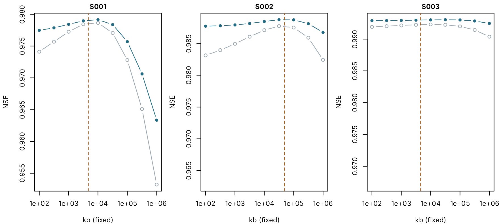

What limits automatic calibration: a study
pdmS7 documentation
Source:vignettes/calibration-study.Rmd
calibration-study.RmdWhen a calibrated parameter comes back wrong, either the search stopped short of the best fit or the record cannot tell the right value from the wrong one. The two call for opposite remedies: a better search in the first case, and in the second, more information or a fixed value. On real data they cannot be told apart, because the best possible fit is unknown.
On synthetic catchments they can. Each catchment’s true parameters
are known, so they can be scored on the same record as the calibration.
A calibration that scores at least as well as the truth has found the
best fit the record allows, and any parameter it still gets wrong is
beyond the record’s reach. This article applies that test to the sample
of 30 catchments in A large sample and
follows where it leads: to a fault in staged calibration, now fixed; to
one parameter, kb, that no search can recover; and to the
one kind of event in which that parameter matters.
The question
A large sample found most parameters
recovered closely and one, kb, the groundwater store’s
constant, recovered poorly. The obvious suspect was the search.
calibrate_pdm() uses L-BFGS-B, which follows the slope of
the objective, estimated by nudging each parameter in turn. A model with
thresholds and stores that switch on and off can have a rough objective
that misleads such a search, and hydrology has long preferred global
methods for that reason. One of them, dynamically dimensioned search
(DDS; Tolson and Shoemaker, 2007), is built for watershed models and now
available as method = "dds".
Four searches, one sample
Each search was run as one calibrate_batch() over the
same 30 catchments, ten years of daily data each, and every result was
set against its truth.
| Search | What it does |
|---|---|
| staged, confined polish | Water balance and slow stores, then fast stores, then a polish of everything kept within a quarter of each range around stage 2’s values (before version 0.8.0) |
| staged | The same, with the polish free to search the full bounds (now the default) |
| all at once | All seven parameters in one search, from four starts |
| staged, DDS | The staged search with DDS, given the same number of model runs as the first |
The four batches take too long to repeat when this page is built, so
their results are stored with the package. The minutes are for four
cores, except the confined polish, which the benchmark has to run on
one. inst/benchmarks/search_methods.R reruns them; each
basin’s searches are seeded, so a rerun gives the same numbers.
study <- utils::read.csv(system.file("extdata", "search_study.csv", package = "pdmS7"))
searches <- c("staged, confined polish", "staged", "all at once", "staged, DDS")
gap <- study$nse - study$true_nse
summary_table <- do.call(rbind, lapply(searches, function(s) {
k <- study$search == s
data.frame(search = s, model_runs = stats::median(study$model_runs[k]),
minutes = study$batch_minutes[k][1], at_least_truth = sum(gap[k] >= -1e-6),
short_by_over_0.001 = sum(gap[k] < -0.001), largest_shortfall = max(0, -min(gap[k])))
}))
summary_table$largest_shortfall <- round(summary_table$largest_shortfall, 4)
summary_table
#> search model_runs minutes at_least_truth short_by_over_0.001
#> 1 staged, confined polish 3323.5 15.30 26 2
#> 2 staged 3431.0 4.37 27 0
#> 3 all at once 2985.0 3.41 29 0
#> 4 staged, DDS 3384.0 5.35 2 19
#> largest_shortfall
#> 1 0.0914
#> 2 0.0003
#> 3 0.0004
#> 4 0.0155The search was not the problem. Calibrating everything at once with L-BFGS-B scored at least as well as the truth in 29 of 30 catchments and was never short by more than 0.0004 in NSE, in 3.4 minutes on four cores. DDS, with the same budget as the staged search, fell short by more than 0.001 in 19 catchments. DDS is designed for budgets of thousands of runs per search; here it had about 564 for each of its six searches per catchment, and on a smooth objective such as NSE the slope-following search makes better use of them.
Where the staged search went wrong
The confined polish failed twice, in S021 and S027.
sample_path <- file.path(tempdir(), "study-basins")
unlink(sample_path, recursive = TRUE)
sample <- synthetic_basins(sample_path, n = 30, years = 10, dt = 24, seed = 7)
trapped <- study[study$search == "staged, confined polish" & study$basin %in% failed,
c("basin", "nse", "true_nse")]
cbind(trapped, sample[match(trapped$basin, sample$basin), c("k1", "k2")])
#> basin nse true_nse k1 k2
#> 21 S021 0.9797780 0.9872466 15.71910 31.24696
#> 27 S027 0.9036003 0.9949747 19.17412 28.12038Both have slow surface stores, between 16 and 31 hours against a sample median of 7 for the first store. Stage 1 fits the water balance and the slow stores with the surface stores held at their starting values, 2 and 4 hours. Where the true surface stores are much slower, stage 1 can make up for them with the wrong slow stores, and a polish kept near that point cannot leave it. Whether it happens depends on where stage 1 lands, which is why it struck 2 catchments in 30 and not every one with slow surface stores. With the polish over the full bounds, the staged search fell short of the truth by more than 0.001 in none of them. Since version 0.8.0 that is the default.
What the record cannot tell: kb
With the search cleared, the parameters it gets wrong tell what the record cannot. Here is each search’s typical error by parameter: the median, across catchments, of how far the calibrated value is from the truth, as a fraction. The surface stores are compared as the faster and slower of the pair, since they can swap without changing the flow.
truth <- sample[, c("basin", "fc", "cmax", "b", "kg", "k1", "k2", "kb")]
ordered <- function(d) {
k <- cbind(d$k1, d$k2)
d$k_fast <- pmin(k[, 1], k[, 2])
d$k_slow <- pmax(k[, 1], k[, 2])
d
}
truth <- ordered(truth)
params <- c("fc", "cmax", "b", "kg", "k_fast", "k_slow", "kb")
recovery <- t(vapply(searches, function(s) {
fit <- ordered(study[study$search == s, ])
tr <- truth[match(fit$basin, truth$basin), ]
vapply(params, function(p) exp(stats::median(abs(log(fit[[p]] / tr[[p]])))) - 1, numeric(1))
}, numeric(length(params))))
round(recovery, 2)
#> fc cmax b kg k_fast k_slow kb
#> staged, confined polish 0.01 0.06 0.10 0.03 0.11 0.08 0.45
#> staged 0.01 0.06 0.09 0.03 0.15 0.10 0.47
#> all at once 0.01 0.06 0.10 0.03 0.11 0.08 0.39
#> staged, DDS 0.03 0.20 0.43 0.10 0.34 0.24 2.81Every search, good or bad, leaves kb the worst
recovered. A search that reaches the truth’s score and still misses a
parameter by that much is meeting a flat objective. The direct test is a
profile: fix kb at a range of values, recalibrate
everything else at each one, and record the best score. If the profile
is flat, the record does not constrain kb. Holding the
other parameters at their true values as well shows how much of the
flatness is kb barely mattering, and how much is the others
making up for it.
others <- c("fc", "distribution.cmax", "distribution.b", "recharge.kg", "surface.k1",
"surface.k2")
kb_grid <- 10^seq(2, 6, by = 0.5)
basin_data <- function(id) {
dir <- file.path(sample_path, id)
forcing <- as.data.frame(data.table::fread(file.path(dir, "forcing.csv")))
forcing$time <- as.POSIXct(forcing$time, format = "%Y-%m-%dT%H:%M:%SZ", tz = "UTC")
meta <- yaml::read_yaml(file.path(dir, "basin.yml"))
day <- format(forcing$time, "%Y-%m-%d")
list(forcing = forcing, observed = data.table::fread(file.path(dir, "flow.csv"))$q_m3s,
truth = read_pdm_config(file.path(dir, "truth.yml")),
first = match(meta$calibration[[1]], day), last = match(meta$calibration[[2]], day))
}
simulate <- function(cfg, forcing, start_flow) {
model <- pdm_from_config(cfg)
state <- suppressWarnings(initial_state_from_flow(model, start_flow, baseflow_fraction = 0.7))
run_pdm(model, forcing[c("rain", "pet")], state)$output$q_m3s
}
nse_on <- function(sim, obs) 1 - sum((sim - obs)^2) / sum((obs - mean(obs))^2)
profile_basin <- function(id) {
d <- basin_data(id)
rows <- d$first:d$last
cal <- d$forcing[seq_len(d$last), ]
obs <- d$observed[seq_len(d$last)]
b <- calibration_bounds(d$truth)
b <- b[b$path %in% others, ]
fits <- lapply(kb_grid, function(kb) {
cfg <- d$truth
cfg$groundwater$kb <- kb
held <- nse_on(simulate(cfg, cal, obs[1])[rows], obs[rows])
fit <- suppressWarnings(calibrate_pdm(
cfg, cal[c("rain", "pet")], obs, stats::setNames(b$lower, b$path),
stats::setNames(b$upper, b$path), warmup = d$first - 1, objective = "nse",
control = list(maxit = 60), starts = 2, seed = 1, log_scale = b$path[b$scale == "log"]
))
list(held = held, refit = 1 - fit$objective, config = fit$config)
})
list(id = id, data = d, fits = fits,
table = data.frame(basin = id, kb = kb_grid,
others_at_truth = vapply(fits, function(f) f$held, numeric(1)),
others_recalibrated = vapply(fits, function(f) f$refit, numeric(1))))
}
profiles <- lapply(c("S001", "S002", "S003"), profile_basin)
# The same span of NSE in every panel, so that a flat profile looks flat everywhere.
span <- max(vapply(profiles, function(p) {
diff(range(c(p$table$others_at_truth, p$table$others_recalibrated)))
}, numeric(1)))
par(mfrow = c(1, 3), mar = c(4, 4.2, 1.6, 0.6), cex.main = 1)
for (p in profiles) {
t <- p$table
top <- max(c(t$others_at_truth, t$others_recalibrated))
plot(t$kb, t$others_recalibrated, log = "x", type = "b", pch = 16, col = pal[2],
ylim = c(top - span, top), xlab = "kb (fixed)", ylab = "NSE", main = p$id)
lines(t$kb, t$others_at_truth, type = "b", pch = 1, col = pal[7])
abline(v = p$data$truth$groundwater$kb, lty = 2, col = pal[3])
}
Best calibration NSE with kb fixed, one panel per catchment, each axis spanning the same range of NSE. Grey: every other parameter at its true value. Blue: every other parameter recalibrated. The dashed line marks the true kb.
mid <- kb_grid >= 100 & kb_grid <= 1e4
flatness <- do.call(rbind, lapply(profiles, function(p) {
t <- p$table
data.frame(basin = p$id, true_kb = p$data$truth$groundwater$kb,
range_others_at_truth = diff(range(t$others_at_truth[mid])),
range_others_recalibrated = diff(range(t$others_recalibrated[mid])),
drop_at_1e6 = max(t$others_recalibrated) - t$others_recalibrated[length(kb_grid)])
}))
flatness[-1] <- round(flatness[-1], 4)
flatness
#> basin true_kb range_others_at_truth range_others_recalibrated drop_at_1e6
#> 1 S001 4693.552 0.0045 0.0017 0.0158
#> 2 S002 48444.917 0.0040 0.0007 0.0020
#> 3 S003 4534.910 0.0004 0.0001 0.0006Across a hundredfold range of kb, from 100 to 10,000,
the best NSE moves by no more than 0.0017 with the other parameters
recalibrated, and by no more than 0.0045 with them held at the truth.
The second number is the telling one: even with nothing making up for
it, changing kb a hundredfold barely changes the flow. The
record does not constrain kb because, over that range,
kb hardly affects the flow. Only very slow values cost
more: at 1,000,000 the best NSE drops by up to 0.016. This is
equifinality in its plainest form: many values of a parameter fit the
record equally well.
The reason lies in how water reaches the groundwater store. It
arrives as recharge, which drains from the soil with time constant
kg, typically thousands of hours in this sample. That
recharge is already slow and smooth. A groundwater store that responds
faster than it passes the recharge on almost unchanged, so the flow
shows the slower of the two stores in series, kg, and hides
the faster, kb. That is why kg is recovered
within a few per cent and kb is not.
Where kb matters: drought
A parameter the record cannot see may still matter for events the
record does not contain. kb sets how fast the groundwater
store drains on its own, which it does only when recharge stops, and
recharge stops only when the soil is dry. So the equally good fits from
the profiles, with kb at about 300, 3,000 and 30,000, are
run through two droughts, each starting on 1 April 2018 in the
validation period:
- A dry summer: six months at 30 per cent of the recorded rain.
- A long drought: twelve months with no rain at all.
# The fits with kb at about 300, 3,000 and 30,000.
kb_sets <- vapply(c(2.5, 3.5, 4.5), function(x) which.min(abs(log10(kb_grid) - x)), integer(1))
scenario <- function(forcing, months, share) {
out <- forcing
begin <- as.POSIXct("2018-04-01", tz = "UTC")
end <- seq(begin, by = paste(months, "months"), length.out = 2)[2]
window <- out$time >= begin & out$time < end
out$rain[window] <- share * out$rain[window]
list(forcing = out, window = window)
}
drought <- do.call(rbind, lapply(profiles, function(p) {
d <- p$data
cases <- list(`dry summer` = scenario(d$forcing, 6, 0.3),
`long drought` = scenario(d$forcing, 12, 0))
do.call(rbind, lapply(names(cases), function(name) {
s <- cases[[name]]
true_low <- min(simulate(d$truth, s$forcing, d$observed[1])[s$window])
usual_low <- min(simulate(d$truth, d$forcing, d$observed[1])[s$window])
ratios <- vapply(kb_sets, function(i) {
min(simulate(p$fits[[i]]$config, s$forcing, d$observed[1])[s$window]) / true_low
}, numeric(1))
usual <- vapply(kb_sets, function(i) {
min(simulate(p$fits[[i]]$config, d$forcing, d$observed[1])[s$window]) / usual_low
}, numeric(1))
soil <- {
model <- pdm_from_config(d$truth)
state <- suppressWarnings(initial_state_from_flow(model, d$observed[1],
baseflow_fraction = 0.7))
run_pdm(model, s$forcing[c("rain", "pet")], state)$output$soil_mm
}
fit_scores <- vapply(kb_sets, function(i) p$fits[[i]]$refit, numeric(1))
data.frame(
basin = p$id, scenario = name, true_soil_at_end_mm = soil[max(which(s$window))],
nse_spread = diff(range(fit_scores)),
low_flow_vs_truth_min = min(ratios), low_flow_vs_truth_max = max(ratios),
same_window_no_drought_min = min(usual), same_window_no_drought_max = max(usual)
)
}))
}))
drought[-(1:2)] <- round(drought[-(1:2)], 3)
drought
#> basin scenario true_soil_at_end_mm nse_spread low_flow_vs_truth_min
#> 1 S001 dry summer 28.936 0.001 0.968
#> 2 S001 long drought 0.008 0.001 0.504
#> 3 S002 dry summer 28.115 0.001 0.963
#> 4 S002 long drought 0.057 0.001 0.353
#> 5 S003 dry summer 72.709 0.000 0.970
#> 6 S003 long drought 4.108 0.000 0.811
#> low_flow_vs_truth_max same_window_no_drought_min same_window_no_drought_max
#> 1 1.021 0.992 1.010
#> 2 1.840 0.992 1.010
#> 3 1.002 0.985 1.004
#> 4 0.867 0.985 1.004
#> 5 0.985 0.990 0.993
#> 6 0.972 0.990 0.993The three parameter sets of each catchment fit the record to within
0.0010 in NSE. Without any drought, their lowest flows in the same
months lie between 0.98 and 1.01 times the truth’s. Through the dry
summer, the soil keeps water, recharge continues, and the band is much
the same: 0.96 to 1.02, with at least 28 mm still in the true soil store
at the end. Through the long drought, the soil empties (to 4.1 mm or
less), recharge stops, the groundwater store drains at the rate
kb sets, and the band opens to 0.35 to 1.84 times the true
lowest flow.
So kb is harmless within the record and decisive beyond
it. Equally good calibrations agree on the floods and droughts they were
fitted to, and can disagree by a factor of up to 3.7 in the lowest flow
of a drought severe enough to stop recharge. It is the low-flow
counterpart of the extrapolated rating at the top end (Larger floods): a model can be trusted
only as far as its record exercised it.
What the study shows
- Check the search against the truth before blaming it. Scoring the true parameters separates a weak search from a weak record. Here the search was sound.
- Calibrate all at once, or in stages with a free polish. Both reach the best fit the record allows. A polish confined near stage 2 can lock in a wrong first stage; it is no longer the default.
- Use DDS for rough objectives, not smooth ones. At equal budget it lost to L-BFGS-B on NSE. It suits threshold objectives and large budgets.
-
Do not report
kbas calibrated. The record cannot identify it. Fix it from regional knowledge and leave it out of the search (exclude = "groundwater.kb"incalibrate_batch()andpdm_stages()), or calibrate it and report the range of equally good values instead of one number. - Before trusting a model in a severe drought, run the drought. Pass a drought scenario through the spread of equally good fits. If the spread is wide, the record cannot answer the question, however good the calibration scores.
The study has limits. The catchments are synthetic, their structure is exactly the model’s, the gauge error is simple and the data are daily. On real data, structural error adds its own equifinality, and the truth is not available to settle it. What carries over is the method: know which parameters the record can see, and test a model where the record did not reach.
For a comparison with machine-learning models, the lesson is the same as for any model: compare the flows, not the parameters, and compare them where the question lies. A score on the record says little about a drought the record does not contain.
Reference
Tolson, B. A. and Shoemaker, C. A. (2007). Dynamically dimensioned search algorithm for computationally efficient watershed model calibration. Water Resources Research, 43, W01413. doi:10.1029/2005WR004723.